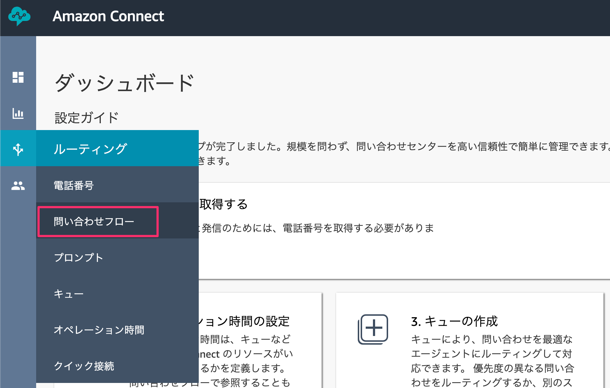
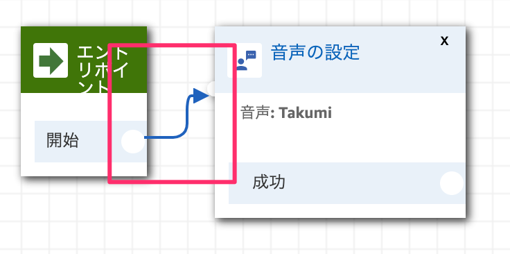
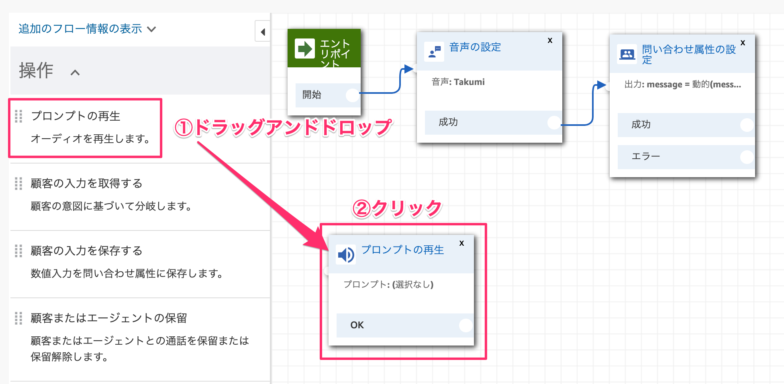
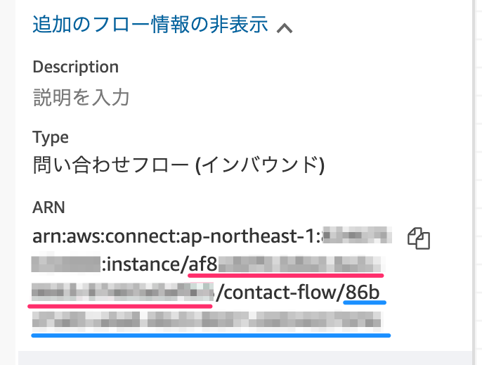
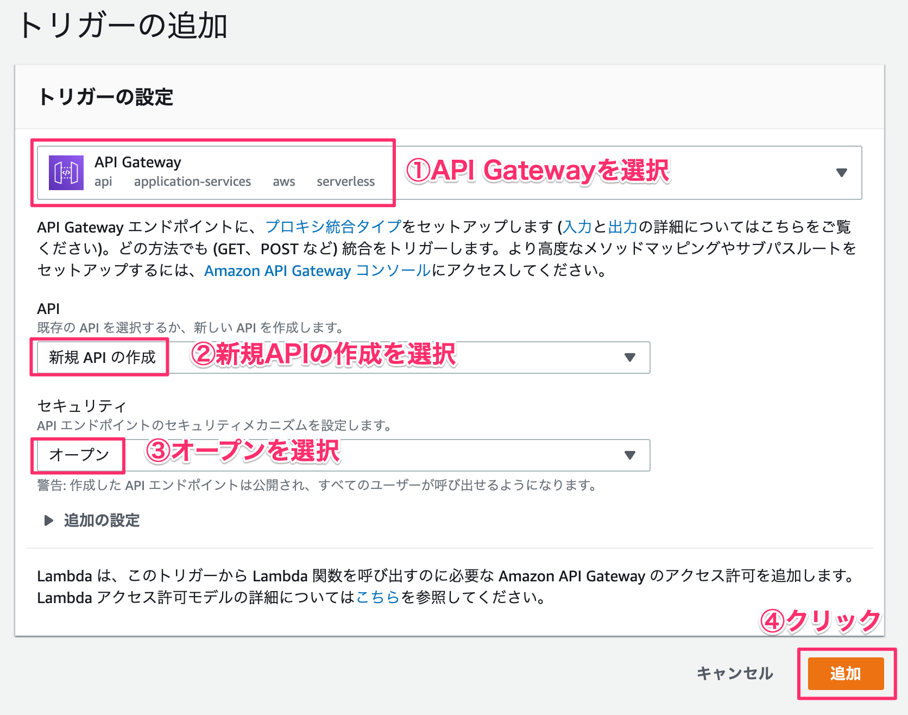

Amazon Connect電話番号取得
すでにAmazon Connectの電話番号を取得している前提で開始します。
まだ未取得な方はこちらから番号を取得しておいてください。
https://ac-handson-00.netlify.com
1-1. 問い合わせフローの作成
左側メニューのルーティングから「問い合わせフロー」をクリックします。

［問い合わせフローの作成］をクリックします。

名前を「M5Stick-AmazonConnect」と入力します。
設定カテゴリにある「音声の設定」ブロックをドラッグアンドドロップして、ドロップしたブロックをクリックします。

言語は「日本語」でお好きな音声を選択してください。

エントリポイントと音声の設定ブロックを繋げます。

設定カテゴリにある「問い合わせ属性の設定」をドラッグアンドドロップします。

属性の設定を行います。「属性を使用する」を選択してください。
宛先キー | message |
タイプ | ユーザー定義 |
属性 | message |

ブロックを繋げます。

操作カテゴリにある「プロンプトの再生」をドラッグアンドドロップします。

属性の設定を行います。「テキスト読み上げ機能(アドホック)」を選択してください。
テキスト読み上げ機能(アドホック) | 動的に入力する |
タイプ | ユーザー定義 |
属性 | message |

ブロックを繋げます。

ブランチカテゴリにある「ループ」をドラッグアンドドロップします。
ループ回数はお好きな数を指定してください。

ブロックを繋げます。

ループとプロンプトの再生を繋げます。

終了 / 転送カテゴリにある「切断/ハングアップ」をドラッグアンドドロップします。

まだ繋いでいない部分を全て「切断/ハングアップ」に繋ぎます。

右上の［保存］と「公開」ボタンを順番にクリックします。

1-2. IDをメモしておく
問い合わせフローの名前の下に「追加のフロー情報の表示」という項目があるので、それを展開します。展開するとARNの情報が表示されるのでinstanceのIDとconstact-flowのIDをそれぞれメモしておきます。

2-1. Lambda関数を作成する
Lambdaから新規で関数を作成します。［関数の作成］ボタンをクリックします。

関数は以下の通り入力して、［関数の作成］ボタンをクリックします。
①関数名 | M5StickC-AmazonConnect |
②ランタイム | Node.js 10.x |
③実行ロール | 新しいロールを作成 |
④ロール名 | M5StickC-AmazonConnect-Role |
⑤ポリシーテンプレート | 基本的なLambda@Edgeのアクセス権限 |

2-2. Amazon Connectアクセス権限を追加する
M5StickC-AmazonConnect-Roleロールを表示をクリックします。
［インラインポリシーの追加］をクリックします。

サービスを展開して、検索窓に「Connect」と入れて検索します。出てきた［Connect］をクリックします。

アクションのアクセスレベルにある「書き込み」部分を展開して、その中にあるStartOutboundVoiceContactのチェックを入れます。

すべてのリソースを選択して、右下の［ポリシーの確認］ボタンをクリックします。

ポリシー名を入力します。M5Stick-AmazonConnect-Policyとしました。右下の［ポリシーの作成］ボタンをクリックします。

Lambda画面に戻り、画面更新するとAmazon Connectの権限が追加されます。

2-3. プログラムを書き込む
index.jsを開き、下記プログラムをコピペしてください。
LINE Thingsからリクエストが飛んでくるので、bodyから対象値を取得します。base64で格納されているので、デコード処理が必要です。
const Util = require('./util.js');
exports.handler = async (event) => {
const body = JSON.parse(event.body);
const thingsData = body.events[0].things.result;
const response = {
statusCode: 200,
body: JSON.stringify('Hello from M5StickC!'),
};
if (thingsData.bleNotificationPayload) {
// LINE Thingsから飛んでくるデータを取得
const blePayload = thingsData.bleNotificationPayload;
var buffer1 = new Buffer(blePayload, 'base64');
var stickData = buffer1.toString('ascii'); //Base64をデコード
console.log("M5StickC-Payload=" + stickData);
const sendMessage = `エムファイブスティックの値は「${stickData}」です。`;
// Amazon Connect送信
await Util.callMessageAction(sendMessage);
}
return response;
};
新規ファイルを作成します。
下記コードをコピペしてください。
'use strict';
const AWS = require('aws-sdk');
var connect = new AWS.Connect();
// 電話をかける処理
module.exports.callMessageAction = async function callMessageAction(message) {
return new Promise(((resolve, reject) => {
// Attributesに発話する内容を設定
var params = {
Attributes: {"message": message},
InstanceId: process.env.INSTANCEID,
ContactFlowId: process.env.CONTACTFLOWID,
DestinationPhoneNumber: process.env.PHONENUMBER,
SourcePhoneNumber: process.env.SOURCEPHONENUMBER
};
// 電話をかける
connect.startOutboundVoiceContact(params, function(err, data) {
if (err) {
console.log(err);
reject();
} else {
resolve(data);
}
});
}));
};
保存する際はファイル名を「util.js」にしてください。

2-4. 環境変数を設定する
Amazon Connectと連携するための環境変数を設定します。
INSTANCEID | 1-2でメモしたinstanceのID |
CONTACTFLOWID | 1-2でメモしたcontact-flowのID |
PHONENUMBER | ご自身の携帯電話番号 ※+81を先頭につけて数字のみにします |
SOURCEPHONENUMBER | Amazon Connectで取得した電話番号 ※+81を先頭につけて数字のみにします |

2-5. API Gatewayを設定する
LINE ThingsからアクセスするためのURLを発行します。
［トリガーを追加］をクリックします。
トリガーの設定は下記を指定します。最後に［追加］ボタンをクリックします。
トリガー | API Gateway |
API | 新規APIの作成 |
セキュリティ | オープン |

APIエンドポイントのURLをメモしておきましょう

右上の保存ボタンをクリックします。
3-1. チャネルの作成
下記にアクセスしてログインしてください。
https://developers.line.biz/ja/
プロバイダーがまだ無い方は作成お願いします。
新規チャネルを作成します。
Messaging APIをクリック

［同意する］をクリック

2つのチェックを入れてから［作成］をクリック

①アプリ名 | M5StickC連携ハンズオン |
②アプリ説明 | M5StickC連携ハンズオン |
③大業種 | 旅行・エンタメ・レジャー |
④小業種 | その他娯楽・エンタメ |
⑤メールアドレス | ご自身のメールアドレス |

［入力内容を確認する］ボタンをクリック

作成したチャネルをクリックします

3-2. アクセストークンを発行する
このチャネルにアクセスするためのトークンを発行します。
［再発行］をクリックします。

[再発行]をクリック

発行されたアクセストークンをメモしておきましょう。

3-3. Webhookを設定
Webhookのアクセス先URLを指定します。

2-5で作成したAPI GatewayのURLを貼り付けます。「https://」は既にあるので、省略して貼り付けます。［更新］ボタンをクリックします。
Webhook送信を利用するに変えます

利用するを選択して［更新］ボタンをクリックします。
稀に利用するに変わらないことがあるので、画面をリロードして確認してください。
3-4. LIFFを設定する
LIFFアプリを設定します。

①名前 | M5Stick-AmazonConnect |
②サイズ | Tall |
③エンドポイントURL | https://www.google.com/ |
④オプション | 必ずONにする |
4-1. シナリオを作成する
のびすけさんが作ったツールをありがたく使います。
下記にアクセスしてください。
https://n0bisuke.github.io/linethingsgen/
左側メニューのSettingをクリックして、3-2で生成したアクセストークンを貼り付けます。
［保存］ボタンをクリックします。

左側メニューのCreate Productをクリックして、プルダウンメニューから3-4で作成したLIFFアプリを指定します。
トライアルプロダクトの名前を入力して［保存］ボタンをクリックします。
左側メニューのCreate Scenarioをクリックして、プルダウンメニューから選択。
そのままの状態で［シナリオセットの登録/更新］ボタンをクリックします。

発行されたserviceUuidをメモしておきます。

4-2. LINEアプリのLINE Things有効化
既に有効化している方はこの手順をスキップしてください。
以下のURLを読み込んで、LINE Thingsを有効化してください。
設定ページにLINE Thingsの項目が増えます

20190722ハンズオンをタップします
［今すぐ利用］をタップします
5-1. コードを書き込む
Arduino IDEを開いて下記コードを入力します。
11行目のサービスUUIDは4-1で生成した値を入力してください。
コードはこちらからもコピペできます
#include <BLEDevice.h>
#include <BLEServer.h>
#include <BLEUtils.h>
#include <BLE2902.h>
#include <M5StickC.h>
// Device Name: Maximum 30 bytes
#define DEVICE_NAME "M5Stick"
// あなたのサービスUUIDを貼り付けてください
#define USER_SERVICE_UUID "＜あなたのサービスUUID＞"
// Notify UUID: トライアル版は値が固定される
#define NOTIFY_CHARACTERISTIC_UUID "62FBD229-6EDD-4D1A-B554-5C4E1BB29169"
// PSDI Service UUID: トライアル版は値が固定される
#define PSDI_SERVICE_UUID "E625601E-9E55-4597-A598-76018A0D293D"
// PSDI CHARACTERISTIC UUID: トライアル版は値が固定される
#define PSDI_CHARACTERISTIC_UUID "26E2B12B-85F0-4F3F-9FDD-91D114270E6E"
BLEServer* thingsServer;
BLESecurity* thingsSecurity;
BLEService* userService;
BLEService* psdiService;
BLECharacteristic* psdiCharacteristic;
BLECharacteristic* notifyCharacteristic;
bool deviceConnected = false;
bool oldDeviceConnected = false;
class serverCallbacks: public BLEServerCallbacks {
void onConnect(BLEServer* pServer) {
deviceConnected = true;
};
void onDisconnect(BLEServer* pServer) {
deviceConnected = false;
}
};
void setup() {
Serial.begin(115200);
BLEDevice::init("");
BLEDevice::setEncryptionLevel(ESP_BLE_SEC_ENCRYPT_NO_MITM);
// Security Settings
BLESecurity *thingsSecurity = new BLESecurity();
thingsSecurity->setAuthenticationMode(ESP_LE_AUTH_BOND);
thingsSecurity->setCapability(ESP_IO_CAP_NONE);
thingsSecurity->setInitEncryptionKey(ESP_BLE_ENC_KEY_MASK | ESP_BLE_ID_KEY_MASK);
setupServices();
startAdvertising();
// M5Stick LCD Setup
M5.begin(true, false, false);
// 横向き
M5.Lcd.setRotation(3);
// ボタン初期化
pinMode(M5_BUTTON_HOME, INPUT);
pinMode(M5_BUTTON_RST, INPUT);
M5.Lcd.fillScreen(TFT_BLACK);
M5.Lcd.setTextColor(YELLOW);
M5.Lcd.setCursor(0, 0);
M5.Lcd.print("Ready to Connect");
Serial.println("Ready to Connect");
}
int btnValue = 0;
void loop() {
if(digitalRead(M5_BUTTON_RST) == LOW) {
// カウントアップ
btnValue++;
M5.Lcd.fillScreen(TFT_BLACK);
M5.Lcd.setTextSize(2);
M5.Lcd.setCursor(0, 0);
M5.Lcd.print("Count");
M5.Lcd.setTextColor(GREEN);
M5.Lcd.setCursor(30, 40);
M5.Lcd.printf("%d", btnValue);
// ボタンが離されるまでループ
while(digitalRead(M5_BUTTON_RST) == LOW);
}
if(digitalRead(M5_BUTTON_HOME) == LOW) {
// LINE Botに紐づくWebhookにデータ送信
const char *newValue=((String)btnValue).c_str();
notifyCharacteristic->setValue(newValue);
notifyCharacteristic->notify();
M5.Lcd.fillScreen(TFT_BLACK);
M5.Lcd.setTextSize(2);
M5.Lcd.setCursor(0, 0);
M5.Lcd.print("Send!!");
// ボタンが離されるまでループ
while(digitalRead(M5_BUTTON_HOME) == LOW);
// カウント初期化
btnValue = 0;
delay(3000);
M5.Lcd.fillScreen(TFT_BLACK);
M5.Lcd.setCursor(0, 0);
M5.Lcd.print("Count");
M5.Lcd.setTextColor(GREEN);
M5.Lcd.setCursor(30, 40);
M5.Lcd.printf("%d", btnValue);
}
// Disconnection
if (!deviceConnected && oldDeviceConnected) {
delay(500); // Wait for BLE Stack to be ready
thingsServer->startAdvertising(); // Restart advertising
oldDeviceConnected = deviceConnected;
M5.Lcd.fillScreen(TFT_BLACK);
M5.Lcd.setTextColor(YELLOW);
M5.Lcd.setCursor(0, 0);
M5.Lcd.print("Ready to Connect");
}
// Connection
if (deviceConnected && !oldDeviceConnected) {
oldDeviceConnected = deviceConnected;
M5.Lcd.fillScreen(TFT_BLACK);
M5.Lcd.setTextColor(GREEN);
M5.Lcd.setCursor(0, 0);
M5.Lcd.print("Connected");
}
}
// サービス初期化
void setupServices(void) {
// Create BLE Server
thingsServer = BLEDevice::createServer();
thingsServer->setCallbacks(new serverCallbacks());
// Setup User Service
userService = thingsServer->createService(USER_SERVICE_UUID);
// Notifyセットアップ
notifyCharacteristic = userService->createCharacteristic(NOTIFY_CHARACTERISTIC_UUID, BLECharacteristic::PROPERTY_NOTIFY);
notifyCharacteristic->setAccessPermissions(ESP_GATT_PERM_READ_ENCRYPTED | ESP_GATT_PERM_WRITE_ENCRYPTED);
BLE2902* ble9202 = new BLE2902();
ble9202->setNotifications(true);
ble9202->setAccessPermissions(ESP_GATT_PERM_READ_ENCRYPTED | ESP_GATT_PERM_WRITE_ENCRYPTED);
notifyCharacteristic->addDescriptor(ble9202);
// Setup PSDI Service
psdiService = thingsServer->createService(PSDI_SERVICE_UUID);
psdiCharacteristic = psdiService->createCharacteristic(PSDI_CHARACTERISTIC_UUID, BLECharacteristic::PROPERTY_READ);
psdiCharacteristic->setAccessPermissions(ESP_GATT_PERM_READ_ENCRYPTED | ESP_GATT_PERM_WRITE_ENCRYPTED);
// Set PSDI (Product Specific Device ID) value
uint64_t macAddress = ESP.getEfuseMac();
psdiCharacteristic->setValue((uint8_t*) &macAddress, sizeof(macAddress));
// Start BLE Services
userService->start();
psdiService->start();
}
void startAdvertising(void) {
// Start Advertising
BLEAdvertisementData scanResponseData = BLEAdvertisementData();
scanResponseData.setFlags(0x06); // GENERAL_DISC_MODE 0x02 | BR_EDR_NOT_SUPPORTED 0x04
scanResponseData.setName(DEVICE_NAME);
thingsServer->getAdvertising()->addServiceUUID(userService->getUUID());
thingsServer->getAdvertising()->setScanResponseData(scanResponseData);
thingsServer->getAdvertising()->start();
}
横のボタンをクリックしてカウントをアップさせて、中央のボタンをクリックするとAmazon Connectから値を教えてくれます。
7/22のM5StickC + LINE Things + Amazon Connect連携ハンズオンはこれを作ります！押したボタンの値を教えてくれます。https://t.co/HIdM5EDfGw#M5StickC#AmazonConnectpic.twitter.com/lKGUZPb7m2
— がおまる@スマートスピーカーアプリ開発入門発売中！ (@gaomar) July 3, 2019